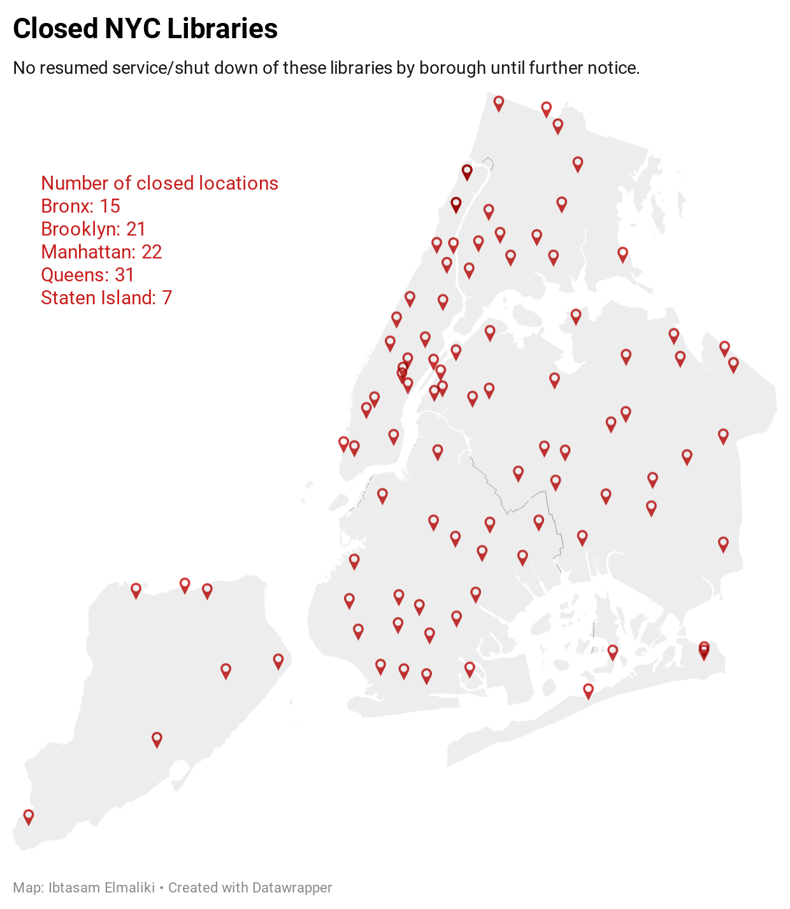

By Ibtasam Elmaliki
NEW YORK- With bowling alleys and casinos opening back up in New York City and indoor dining back on, libraries are slowly treading along. The locations that have opened up are yet to offer their full services, with some locations only having drop off as the only option.
Pleas for libraries to reopen have been brewing on social media since the summer. One tweet from Broxonite user, Jaguar Bey, dated from July, mentions one of the many reasons why libraries are essential, a place to seek refuge from New York weather. “You need to tell @NYGovCuomo...open the libraries, oh yea their essential, where you think most kids are during the summer...in the library, air conditioned!” Now with winter here, his tweet still stands, but with community members seeking shelter from the cold.
Juleyka Lantigua Williams, a journalist and creator of the podcasting service, LANTIGUA WILLIAMS & CO, a Native New Yorker, sees libraries as an importance to bring communities together and contribute to the childhood of neighborhood kids.
“Libraries are essential as gathering places where people can enrich their lives by borrowing books, using computers, and meeting new people they may otherwise miss--librarians, neighbors, classmates,” Williams said. “They foster a sense of belonging for children as they grow, anchoring their childhood to a place that is always welcoming, that is supportive of their curiosity, and where caring adults respect their ideas.”
Robert Sherwood, NYPL (New York Public Library) publicist was sought out to explain the factors that decide which locations stay open.
“The Library’s selection of branches to reopen is based on a number of factors. First and foremost the branch must be able to provide the safest environment for patrons and staff. To accomplish this, the Library consults with health and safety experts,” said Sherwood. “We also must consider how each library is able to accommodate enhanced procedures and that they have staff available to maintain them. All of these considerations and more are taken into account when reopening a local library.” 
As for the overall delay of reopenings city wide, it is yet to be determined when it will happen. “We understand the significant role our branches play in the community and we are as eager as our patrons to provide the resources and services they need,” he said. “Although, we are taking careful steps forward in reopening, we are cautiously optimistic about the future.”
Sources:
https://www.bklynlibrary.org/locations#closed-for-covid-19
https://www.queenslibrary.org/about-us/locations
https://www.nypl.org/locations